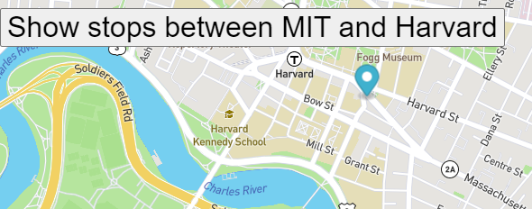

PacMen Exercise

This code is about creating a PacMen game.
Here's how the game is played:
When you click the "Add PacMan" button, a new pacman should appear at a random position on the screen.
When you click the "Start Game" button, the pacman or pacmen created should start moving at random velocity on the screen.
When a given pacman hits the edge of the screen, it should change position to stay within the frame of the web page.
More Infomation
Eye Exercise
This code is about Eye exercise.
Here's how to interact with the interface:
You will see 2 eyes on your screen. You will have to move mouse pointer in random direction.
The Eyeball will move wherever the mouse pointer moves.
More Infomation
Real Time Bus Tracker

This code is about Tracking the Bus in Real Time on the map.
Here's how to interact with the interface:
Once the page loads, click on the "Show stops between MIT and Harvard" button.
A blue color location icon will start moving fro one stop to another as per its real time location.
More Infomation
Thank You